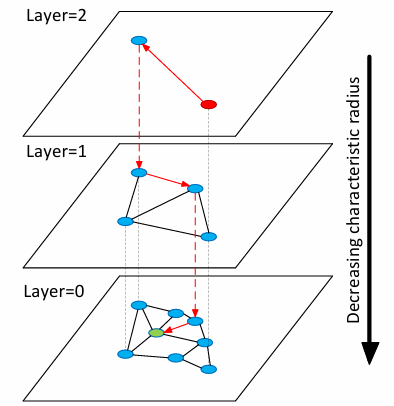

HNSW论文笔记
HNSW 层次化可导航的小世界
背景就不一一解释了， 主要是为了解决相似性查找的问题。
相关概念介绍
1. Proximity Graph
Proximity Graph 的主要思想是，随机选取一个开始节点， 从这个节点开始搜索它的邻居，找到邻居中和目标节点距离最近的一个， 再以这个邻居开始进行下一轮迭代。
思路很简单的同时，存在着非常多的问题，最为关键的就是搜索复杂度无法确定，孤岛效应难以解决，以及构建图的开销太高，复杂度达到了指数级别。
2. 可导航的小世界模型
Navigable small world models 的主要思想是：我们把库中的节点随机插入图中，每次插入节点的时候都找图中和被插入节点最近的M个每个节点连边，这样保证了图的连通性。
文章反复提到的对数多项式复杂度实际上是:
$$a_{k}log^{k}(n)+…+a_1log(n)+a_0$$
HNSW算法
NSW中单个贪心搜索的多对数复杂性的原因在于，总的距离计算次数大致与贪心算法跳转的平均次数与贪心路径上节点的平均度数的乘积成正比。
HNSW的主要思想是根据节点之间连接的长度尺度将图分为不同的层，然后再多层图中进行搜索。

自图中的红色节点开始，利用贪心算法搜索和它距离最近的一个节点，然后逐层搜索直至搜索到最下层。
HNSW论文笔记
http://example.com/2025/05/11/HNSW论文笔记/